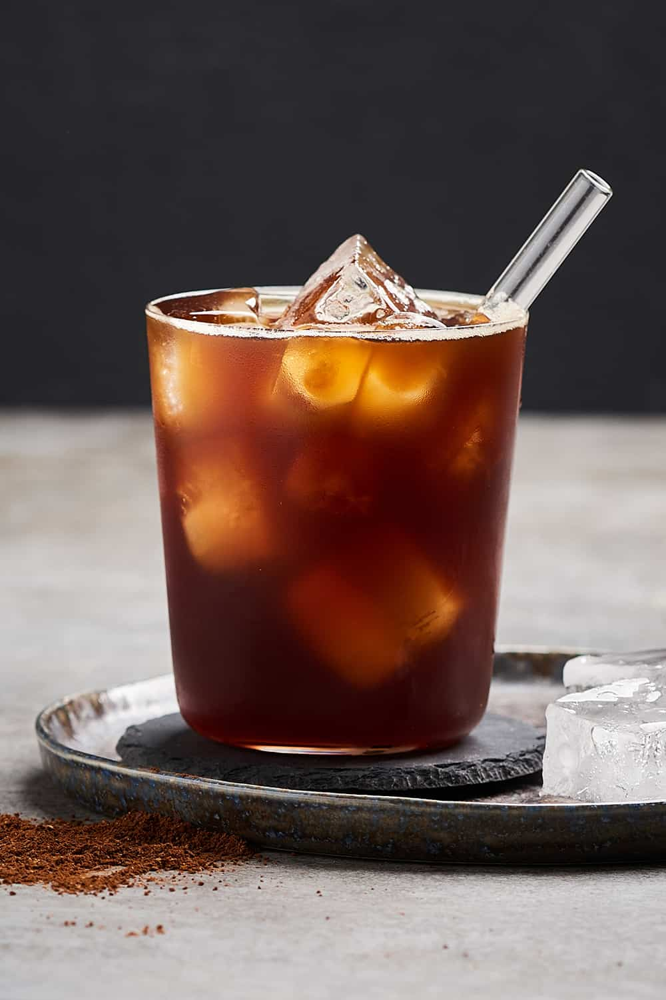

Novas receitas de café, e sempre priorizando a qualidade, venha conferir! 😍

Novo tipo de torra de café, desenvolvida por agricultores locais! 😇

Temos uma nova receita de café para quem ama um café com caramelo! 😋
Novas lojas de café que foram abertas na cidade! 💜

Novo jeito de fazer o café, deixando ele menos amargo! 😚